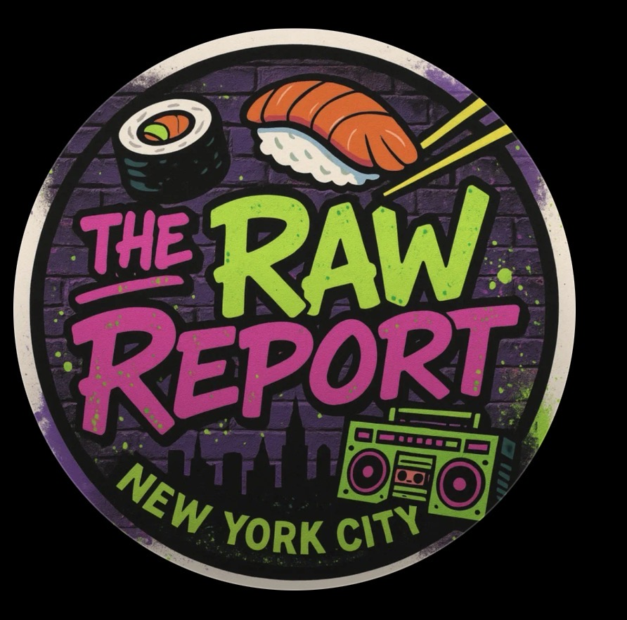

If it needs spicy mayo, it’s probably trash.
🐟 The Raw Report — Sushi Fish ID
Upload a sushi box photo → get a left-to-right, row-by-row breakdown of fish & garnishes.
If it needs spicy mayo, it’s probably trash.
🐟 The Raw Report — Sushi Fish ID
Uploads go to our Cloudflare Worker (key is hidden). No login, no paste.